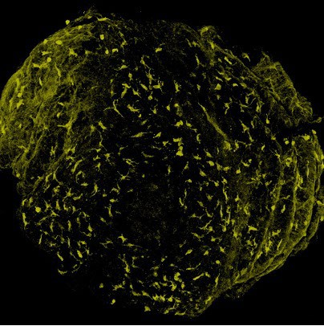

01
Sem Colidio, Vasco busca alternativa para montar ataque contra o Boca Juniors; veja provável escalação
Lance! · 12/10/2026 · 19:05 (Brasília)Fonte original ↗
 BBC WorldImmigration agents search congresswoman Ilhan Omar's homePakistan Christian PostSardar Mushtaq Gill insta as nações de maioria cristã em todo o mundo a reconhecerem a cristianofobia e a combaterem a hostilidade anticristã e os ataques à fé cristã
BBC WorldImmigration agents search congresswoman Ilhan Omar's homePakistan Christian PostSardar Mushtaq Gill insta as nações de maioria cristã em todo o mundo a reconhecerem a cristianofobia e a combaterem a hostilidade anticristã e os ataques à fé cristã CNN BrasilTelescópio Fast da China identifica pulsar como parte de um sistema estelar triplo primordial em evolução orbitado por uma anã branca
CNN BrasilTelescópio Fast da China identifica pulsar como parte de um sistema estelar triplo primordial em evolução orbitado por uma anã branca Lowy InstituteRevisão: Como a Austrália pode se adaptar a uma economia mundial em mudança
Lowy InstituteRevisão: Como a Austrália pode se adaptar a uma economia mundial em mudança Sri Lanka GuardianA Nova Assimetria da Guerra no Médio Orienteapnews.comRisco de fome no Sudão agravado por conflitos, secas e escassez de financiamento, diz relatórioNewsBytesSpaceX lançará missão de reabastecimento Dragon para Estação Espacial Internacional
Sri Lanka GuardianA Nova Assimetria da Guerra no Médio Orienteapnews.comRisco de fome no Sudão agravado por conflitos, secas e escassez de financiamento, diz relatórioNewsBytesSpaceX lançará missão de reabastecimento Dragon para Estação Espacial Internacional www.terra.com.brPetróleo fecha em alta após ataques na Arábia Saudita gerarem preocupações com ofertaNZ HeraldWatch: Greens propose $6b economic package promising 64,000 new jobs
www.terra.com.brPetróleo fecha em alta após ataques na Arábia Saudita gerarem preocupações com ofertaNZ HeraldWatch: Greens propose $6b economic package promising 64,000 new jobs BBC News BrasilO peso do agro na urna explica a geografia do voto no 1º turno, segundo economista da Universidade de Londres
BBC News BrasilO peso do agro na urna explica a geografia do voto no 1º turno, segundo economista da Universidade de Londres asiapacificdefencereporter.comADF inicia apoio ao mais recente programa Antártico Australiano
asiapacificdefencereporter.comADF inicia apoio ao mais recente programa Antártico Australiano www.terra.com.brBrasil x Argentina: onde assistir, horário e escalações do duelo no futebol feminino
www.terra.com.brBrasil x Argentina: onde assistir, horário e escalações do duelo no futebol feminino noticias.uol.com.brIncêndio em trem-bala na Espanha interrompe viagens entre Madri e BarcelonaTribuna do SertãoEm busca de autonomia, Índia encontra na Rússia um parceiro confiável
noticias.uol.com.brIncêndio em trem-bala na Espanha interrompe viagens entre Madri e BarcelonaTribuna do SertãoEm busca de autonomia, Índia encontra na Rússia um parceiro confiável veja.abril.com.brONU coloca cidade gaúcha entre as 50 melhores vilas turísticas do mundosudantribune.comColigação anti-guerra do Sudão reúne-se com enviados africanos e internacionais sobre roteiro de paz
veja.abril.com.brONU coloca cidade gaúcha entre as 50 melhores vilas turísticas do mundosudantribune.comColigação anti-guerra do Sudão reúne-se com enviados africanos e internacionais sobre roteiro de paz O POVOBuraco negro no centro da Via Láctea tem massa de 4 milhões de sóis, mas NASA não marcou uma 'data de despertar'ABC News & Headlines – Australian Broadcasting CorporationComerciantes enviam cegamente bilhões em lucros para o lixo com o desperdício de alimentosThe State PressPesquisadores da ASU explicam os Prêmios Nobel de 2026 nas áreas científicas
O POVOBuraco negro no centro da Via Láctea tem massa de 4 milhões de sóis, mas NASA não marcou uma 'data de despertar'ABC News & Headlines – Australian Broadcasting CorporationComerciantes enviam cegamente bilhões em lucros para o lixo com o desperdício de alimentosThe State PressPesquisadores da ASU explicam os Prêmios Nobel de 2026 nas áreas científicas Folha PEFutebol feminino: Arena de Pernambuco recebe Brasil x ArgentinaOlimpíada Todo DiaFranca busca virada no fim, bate o Mogi e força o Jogo 4 na finalVindobona.orgRochas lunares vistas do espaço: China doa rochas do outro lado da Lua às Nações Unidas em VienaJornal EconómicoMau tempo: Comissão do Parlamento Europeu aprova apoio de 261 ME para Portugal
Folha PEFutebol feminino: Arena de Pernambuco recebe Brasil x ArgentinaOlimpíada Todo DiaFranca busca virada no fim, bate o Mogi e força o Jogo 4 na finalVindobona.orgRochas lunares vistas do espaço: China doa rochas do outro lado da Lua às Nações Unidas em VienaJornal EconómicoMau tempo: Comissão do Parlamento Europeu aprova apoio de 261 ME para Portugal www.newsday.comMilitantes curdos do PKK retiram-se de 4 campos no norte do Iraque como parte do processo de paz com a Turquiawww.msn.comTragédia marítima mata 139 imigrantes na África OrientalSpaceSpaceX lançando 6.300 libras de carga para a ISS em 13 de outubro: assista ao vivoNotícias AgrícolasSoja fecha no vermelho em Chicago com mercado digerindo safra maior nos EUAThe Canberra TimesComo a proposta do estádio da cidade poderia fortalecer o campo de Canberra para a expansão da equipe NBLASU NewsMapeando a diversidade genética da vida antárticaCorreio do PovoAtriz Selma Blair é presa após confusão em voo nos EUA
www.newsday.comMilitantes curdos do PKK retiram-se de 4 campos no norte do Iraque como parte do processo de paz com a Turquiawww.msn.comTragédia marítima mata 139 imigrantes na África OrientalSpaceSpaceX lançando 6.300 libras de carga para a ISS em 13 de outubro: assista ao vivoNotícias AgrícolasSoja fecha no vermelho em Chicago com mercado digerindo safra maior nos EUAThe Canberra TimesComo a proposta do estádio da cidade poderia fortalecer o campo de Canberra para a expansão da equipe NBLASU NewsMapeando a diversidade genética da vida antárticaCorreio do PovoAtriz Selma Blair é presa após confusão em voo nos EUAOmar, um crítico ferrenho de Trump, disse que a busca era “uma tentativa de atingir inimigos políticos” e que ela “não será silenciada”.
A coligação do candidato à reeleição Luiz Inácio Lula da Silva (PT) protocolou uma representação no Tribunal Superior Eleitoral (TSE) para solicitar a remoção de postagens falsas envolvendo o comício realizado neste domingo (11), na Avenida Paulista, em São Paulo. O PT acusa a campanha do candidato Flávio Bolsonaro (PL) e seus apoiadores de postarem desinformação para vincular imagens antigas de pessoas usando drogas com os militantes que estiveram no comício, além de atribuir ao partido episódios de vandalismo. Notícias relacionadas: Lula quer aumentar incentivos à cultura; Flávio defende patrimônio. Técnicos do TSE não encontram conteúdo fa
A nova assimetria da guerra no Oriente Médio Guardião do Sri Lanka
SpaceX lançará missão de reabastecimento Dragon para a Estação Espacial Internacional NewsBytes
Os preços do petróleo fecharam em alta de cerca de 1% nesta segunda-feira, à medida que ...
Fernando Rugitsky, economista e pesquisador, explica como - e por quê - a ascensão do chamado 'agro-bolsonarismo' criou para a direita radical uma base territorial e social comparável àquela que o PT construiu no Nordeste ao longo das últimas décadas.
A Força de Defesa Australiana (ADF) está comemorando 10 anos da Operação Southern Discovery, tendo iniciado oficialmente seu apoio à Antártida Australiana...
O presidente do Senado, Faisal Fayez, reuniu-se no domingo com o embaixador norueguês na Jordânia, Andreas Lovold, para discutir as formas de...
Amistoso preparatório para o Mundial conta com exibição em TV aberta, canal fechado e plataformas digitais
Um trem de alta velocidade pegou fogo hoje (12) na Espanha e a circulação férrea entre Madri e Barcelona foi interrompida. Não houve vítimas.O incêndio atingiu um trem-bala que viajava da estação Madrid Puerta de Atocha com destino a Figueres e obrigou
Ministro do Turismo, Celso Sabino celebrou a conquista do município de Antônio Prado: 'exemplo de turismo rural sustentável'
Duas aeronaves militares avançadas KC-390 Millennium, da Força Aérea Brasileira (FAB), reforçaram nesta segunda-feira (12) as ações de combate aos incêndios florestais no estado do Amazonas . O KC-390 Millennium é o mais avançado avião militar projetado na América Latina . Uma das aeronaves será usada como cargueiro de apoio às operações, e a outra será equipada com o Sistema Modular Aerotransportado de Combate a Incêndios, capaz de lançar 12 mil litros de água pressurizada em um único voo. Notícias relacionadas: Incêndios no Amazonas resultam de ação humana, diz ministro. Governo ajudou assim que Amazonas decretou emergência, diz ministro. A
Comerciantes enviando cegamente bilhões em lucros para o lixo com seu desperdício de alimentos ABC News & Headlines – Australian Broadcasting Corporation
Militantes curdos retiraram-se de quatro campos no norte do Iraque como parte de um esforço de paz com a Turquia, segundo a agência de notícias estatal turca.
A má fase de Coritiba e Botafogo no Campeonato Brasileiro continua. Na tarde desta segunda-feira (12), os times empataram por 1 a 1 no Estádio Couto Pereira, na capital paranaense, pela 30ª rodada. Aniversariante do dia, o Coxa acumula cinco jogos sem vitórias e segue no meio da tabela, provisoriamente em 10º lugar, com 39 pontos. O Alviverde, que completou 117 anos nesta segunda (12), está a nove pontos do Bahia, que fecha o grupo dos cinco primeiros colocados (G5), que estariam classificados à Libertadores do ano que vem. O time também está a sete pontos do Internacional, que abre a zona de rebaixamento (Z4) à Série B, que engloba as quatro

Com um IDH de 0,817, considerado muito alto pelo Programa das Nações Unidas para o Desenvolvimento (PNUD), Vinhedo aparece na

O petróleo fechou em alta nesta segunda-feira, 12, em meio à intensificação de ataques dos Houthis contra a Arábia Saudita e a novas hostilidades da Rússia contra alvos energéticos ucranianos, mesmo após o presidente dos EUA, Donald Trump, declarar um
A IA pode aumentar a lacuna entre os que não têm e os que têm muito aapnews.aap.com.au

Isso ocorre depois que o grupo armado atingiu o aeroporto internacional de Riad e outras instalações, matando 13 pessoas, em uma escalada significativa.
Explosões sônicas antes do amanhecer são possíveis enquanto a SpaceX está pronta para o lançamento na terça-feira Orlando Sentinel
Operação no estado foi reforçada com 290 brigadistas e o envio de seis aeronaves para apoio às ações em áreas de difícil acesso.
Um cessar-fogo mediado pelos EUA deveria pôr fim à guerra em Gaza. Um ano depois, o progresso paralisou o Boston Herald
Nave espacial condenada compartilha imagens cósmicas antes da reentrada ardente Nonstop Local News Montana

Apesar de o presidente dos EUA ter anunciado que a infraestrutura energética não seria direcionada, os ataques continuaram, afirma a Ucrânia.
Um ano após o cessar-fogo, os irritados moradores de Gaza dizem que ainda vivem como se a guerra nunca tivesse acabado The Times of Israel

Os experimentos da NASA focados na saúde humana e vegetal e em organismos resistentes a medicamentos viajarão para a Estação Espacial Internacional a bordo da 35ª missão de Serviços de Reabastecimento Comercial da SpaceX para a agência a partir da Estação da Força Espacial de Cabo Canaveral, na Flórida, avançando pesquisas que beneficiam a vida na Terra e a exploração futura. Esta pesquisa apoia a saúde dos astronautas durante missões de longa duração através […]

Os pesquisadores dormirão em seu navio para evitar caranguejos gigantes que podem levantar pesos pesados, partir cocos e podem ter desempenhado um papel na morte de Earhart.
Casa do deputado Ilhan Omar revistada por agentes federais em investigação criminal NBC News
Missão Starlink marcada para lançamento hoje em Vandenberg SFB Santa Ynez Valley News
O gelo atingiu a sua terceira extensão máxima mais baixa desde o início das observações por satélite.
Atualização de notícias da Ásia: Acordo comercial China-UE, protestos na Índia, mísseis norte-coreanos e alerta de IA de Cingapura dominam as manchetes de 12 de outubro NetNewsLedger

Shadrack Sibiya negou ter preparado um jovem de 16 anos e estuprado um jovem de 18 anos.
QUARTO DIA: CÚPULA DE MÍDIA DO PACÍFICO PEDE UMA LIDERANÇA MULHER MAIS FORTE, OPORTUNIDADES PARA OS JOVENS E UM PACÍFICO AZUL MAIS RESILIENTE Ngaarda Media

À medida que o dia das eleições se aproxima, o presidente volta os olhos para o exterior em busca de ajuda para resolver um problema interno urgente.
Nova Zelândia entre 30 países que condenam os 'ataques violentos' do Irã RNZ
Os pinguins antárticos emitem até 7 milhões de toneladas de metano por ano, revela estudo Euronews.com
33 nações condenam ataques ligados ao Irã Notícias do Bahrein

Nem o Egipto nem o Sudão comentaram os alegados ataques num campo de mineração artesanal no sábado.
A pesquisa sobre pontos de ruptura climática tem um ponto cego: a Groenlândia elimina sistemas de alto risco Tech Times

Embora Volodymyr Zelensky, da Ucrânia, sugira que assinaria um cessar-fogo nas infra-estruturas energéticas, a Rússia pouco disse.

A guerra civil arraigada no Iémen é agora impossível de ignorar. Mas nas salas de operações da cidade portuária de Aden, a geopolítica parece remota.
Explosão de munição durante viagem escolar mata estudante em Israel e outros desenvolvimentos no Oriente Médio WHEC.com
O que há em um nome? O suficiente para enredar Austrália, Nova Zelândia e PNG em uma batalha legal pelo nome do time de rugby 'Chiefs' Menafn
A guerra no Sudão aprofunda a insegurança após ataque mortal contra mineiros de ouro Últimas notícias do Azerbaijão
PNG compromete US$ 7,95 milhões em cinco anos para negócios nas Ilhas Tuvalu
O SBT publicou uma nota nesta segunda-feira (12) em seu portal de notícias na qual admite ter informado de forma incorreta que a Empresa Brasil de Comunicação (EBC) seria responsável pela falha de áudio registrada na propaganda eleitoral do candidato à Presidência Flávio Bolsonaro (PL), exibida na tarde de hoje. Segundo o SBT, o problema ocorreu durante a conversão técnica do programa. Notícias relacionadas: Técnicos do TSE não encontram conteúdo falso no canal Exército do Lula. TSE barra anúncios de Lula acusando Flávio de ser contra escala 6x1. Na atualização da reportagem, o portal afirmou que “a empresa estatal é responsável apenas pela t

A Austrália se aproxima da vitória sobre a África do Sul em Durban, depois que o teste dos sonhos de Matt Renshaw continua.
O jornalista brasileiro Rogério Tomaz Jr., conhecido por suas críticas ao governo do presidente argentino Javier Milei, foi impedido de entrar na Argentina nesta segunda-feira (12), ao desembarcar no aeroporto Aeroparque, em Buenos Aires. As autoridades migratórias determinaram o cancelamento de sua residência permanente e estabeleceram uma proibição de reingresso por cinco anos . O profissional afirma suspeitar de motivação política, em meio a confrontos recentes com integrantes do governo argentino nas redes sociais. Notícias relacionadas: EUA tiram visto de procurador que investiga ex-assessor de Milei. Pobreza na Argentina volta a subir e
Declaração Conjunta sobre a Atribuição do Reino Unido do Envolvimento do Irã na Tentativa de Ataque Terrorista na RAF Fairford Departamento de Estado dos EUA (.gov)
Wakeham convoca os fãs de Fiji a apoiarem Bati FBC News

Vídeo: 00:02:54 Após 237 dias e mais de 3.700 órbitas ao redor da Terra a bordo da Estação Espacial Internacional, Sophie Adenot está de volta à Terra! Após uma transferência para a Tripulação-13, Sophie e seus tripulantes da Tripulação-12 desencaixaram em 7 de outubro e pousaram na costa da Califórnia no dia seguinte. Agora de volta à Europa, Sophie começará a sua recolha de dados pós-voo e reabilitação enquanto se reajusta à vida na Terra após a mais longa missão no espaço de um astronauta europeu até agora. Bem vinda ao lar, Sofia!